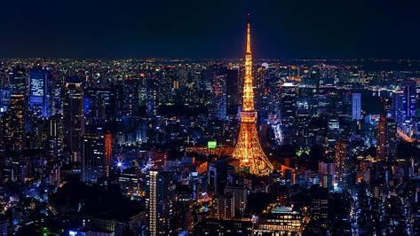

Exploring Tokyo

Tokyo, the bustling capital of Japan, is a city that seamlessly blends tradition and modernity. From ancient temples to futuristic skyscrapers, Tokyo offers a unique travel experience.it,s a city that never sleeps, with something for everyone. Whether you're exploring the historic Asakusa district, shopping in Shibuya, or enjoying the serene beauty of Ueno Park, Tokyo is a city that captivates and inspires. from the vibrant streets of Shibuya to the serene gardens of Ueno, Tokyo is a city that never fails to amaze. The blend of ancient traditions and cutting-edge technology creates a unique atmosphere that is both exciting and calming.
Top 3 Travel Destination
| rank | Country | Best time to visit | Language |
|---|---|---|---|
| 1 | Japan | March to May | Japanese |
| 2 | France | April to June | French |
| 3 | Italy | April to June | Italian |
Word i go by
"Traveling – it leaves you speechless, then turns you into a storyteller." – Ibn Battuta